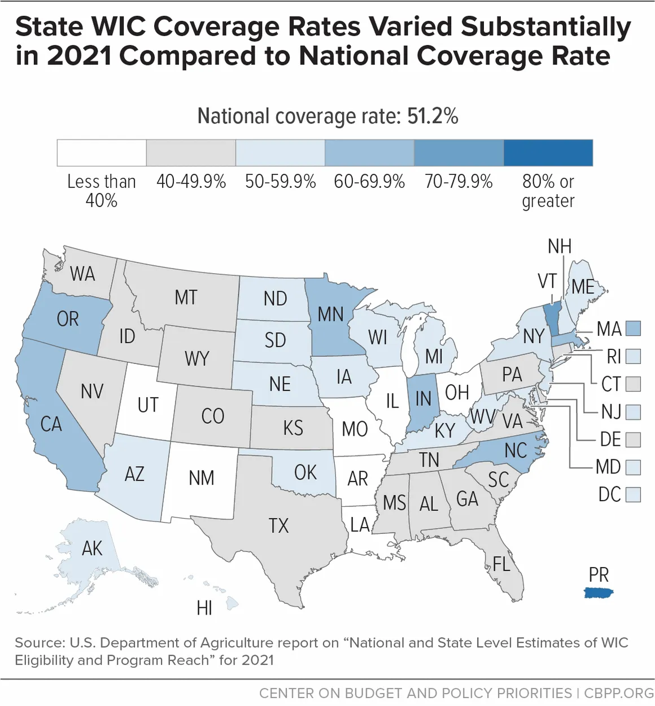

Food Food For Thought: Expanding WIC
What is WIC?
In 1972 the Child Nutrition Act of 1966 was amended to also add a Special Supplemental Food Program for Women, Infants, and Children, otherwise known as the WIC program. The program was Designed to provide nutious foods and utrition-related assisatace to ow income women (or any legal guardian), infants, and children who are concered to be at a nutrion risk
WIC orginal legislation Public Law 92-433 (1972) introocided WIC as a pilot program. The legilastion established the Special Supplemntal Food program for WOmen, Infants, Children and outlined eligible poelpe to serve. It focused on providngi nutritional food assistance to low-income women with infant, and children that were considred at a nutrinal risk.
Public Law 92-433 (1972) defines the risk as factors such as inadequate nutirtonal patterns, anemia, preamutre birth, and inadquate growth. These established the orginal purpose of WIC as a nutritinal assiance program
Why Should WIC be Expanded?
Since WIC's implimentation n 1974, WIC has impacted over 7 million people with more than 10,000 Clinics nationwide. ALthough, WIC Should be expnaded and modrenized by making it more accesable, updating eligibility requirements, and putting more indepth risk factor utilization for poeple who may qualify but fail a diffrent eligbility requirment
Risk Factors
- Age
- Financial Stability
- Net v.s. Gross income
- Debt
- Addctions
Updated eligibility
- Net income
- Raised Age Limit
- Guardianship
- Residency Requirements
Modernize
- Online Signup
- Digital Benefits Card
- Mobile App

Risk Factors
Risk factors declare why a family may be at risk
See why risk factors needs to be updatedEligibility
Elibility effects what Risks are taken in when decing if someone is eligibile
See why Eligibility factors needs to be updatedModrenized
Modrenization allows for the program to be more accessable
See why Modrenization needs to be updatedCounter Argument: Expanding too much
A common counter argument is that expantion is putting too much strain on the fedrel goverment and would be unsustianable in proatice. however, this counterargument overlooks the potential cost to families who much turn to to programs like snap. Wic provides a nutrincal assistaqnce rather than households food buget. A person who mainlu needs assiant purching nutritious foods, such as produce, may not need a more assiantce but ine of focus. Wxpanding WIC could therefore provide a more targeted form of assaitance. Reasresh on WIC oderization has also found payment digtitzation can be finaccally appealing, demoing that investments in WIC access so not necesairly represent poor use of public funds (Ambrozek et al., 2026).Bu rather than vieweinig expantion solely as an expense, policy makers can consider whether improving access to targeted utritional assistance could reduce barriers to participation and better connect fileiees with the program.
Development and AI disclosure
An AI assistant though the Copilot SDK in Visual Studio Code helped with website maintenance, including downloading and converting image assets, updating local and GitHub Pages-compatible paths, adding accessibility and loading scripts, and checking links and markup. AI had no hand is producing the CSS, or the writen cotent of this page.
The SnorpCSS JavaScript files are AI-generated for minor site behaviour and A11y Assessabilty settings. They support accessibility, lazy loading, and nav related behavior; they did not contribute to the written content, research, or conclusions.
Resources
These sources informed the historical background, policy discussion, eligibility proposals, food-insecurity discussion, and modernization recommendations on this website. The page text presents the ideas in original wording and identifies source-based claims with in-text citations.